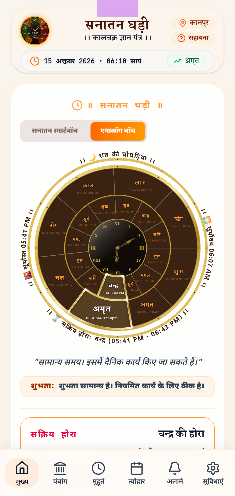
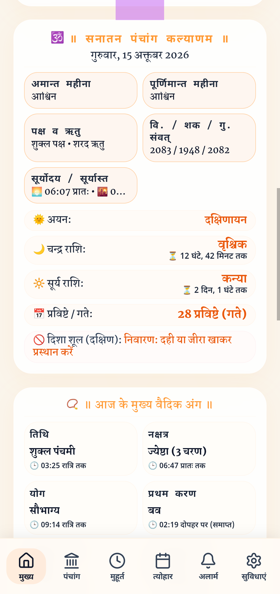
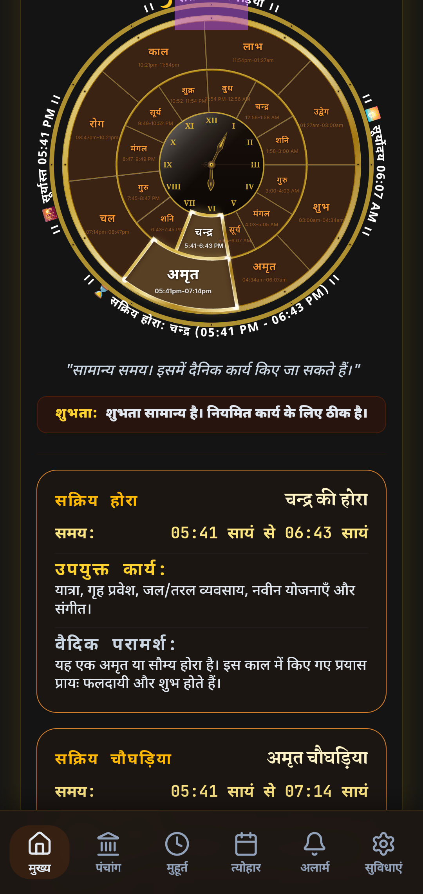
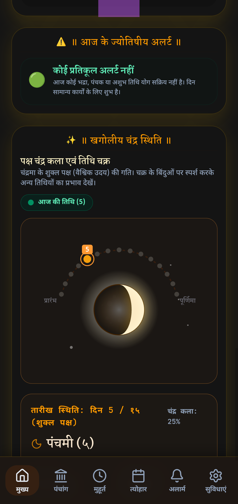
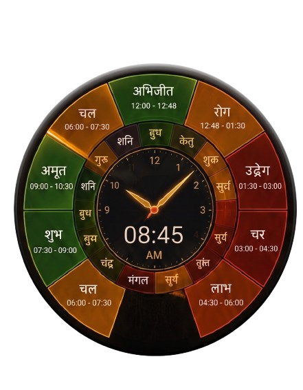

Every single second carries ancient sacred cosmic energy.
Instantly know whether your current moment is Amrit (Best), Shubh (Auspicious), or Rahu Kaal (Adverse).


Micro-precision planetary calculations for every single sunrise and sunset across the globe.



Stop checking the time. Start living the Muhurat.